2 ䷁ 坤卦 坤為地
坤，元亨，利牝馬之貞。君子有攸往，先迷，後得主利。西南得朋，東北喪朋，安貞吉。初六，履霜，堅冰至。六二，直方大，不習无不利。六三，含章可貞，或從王事，无成有終。六四，括囊，无咎无譽。六五，黃裳，元吉。上六，龍戰于野，其血玄黃。用六，利永貞。
【卦名】
今本：坤 帛書：川 歸藏：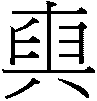 清華簡：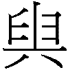 漢代又名：巛 海昏：巛
坤卦帛書作「川」，漢代許多文獻和石碑都作「巛」，巛即川。《歸藏》則作，清華簡作。依據《康熙字典》，巛、，以及都是坤的古文。
就字源來說，坤卦可做川，並可能通申、伸、寅、演，與順等字。
坤與申
《說文》：「坤，地也，易之卦也，从土从申，土位在申。」段注：「此說从申之意也。《說卦傳》曰：坤也者地也，萬物皆致養焉，故曰致役乎坤。坤正在申位，自倉頡造字已然，後儒乃臆造乾南去坤北為伏羲先天之學，《說卦傳》所定之位為文王後天之學。甚矣！人之好怪也。」
依照《說文》，「坤」字源自於易卦卦名，因為坤為土，土位在申，因此名為坤，申大概在西南方的位置，大致符合現今的後天八卦圖。
這個說法也得到段玉裁的支持，但實在大有問題。這是以五行方位解釋坤，但易卦的發展比五行更早，兩者的結合大概在戰國中期，而且若就五行方位來說坤，土位應該在未而不是在申，申在五行屬金。不僅如此，這個說法又將易卦與地支相結合，但根據清華簡，地支為申者是勞卦（即坎卦），也與土位在申之說無以融合。至於「自倉頡造字已然，後儒乃臆造…」說法本身和段玉裁所批評的先後天八卦一樣，根據的同樣都是不足為憑的「傳說」。
若不理會《說文》「土位在申」的說法，單純從坤字的形構來看，坤從土從申，土有象徵大地之意。另一方面，在文字演進中經常有文字繁化的情況。多數情況為多加一部首以與後來的衍生字做區別，例如「夬」原本就是一種有缺口的環形玉，為與其他有夬字邊的衍生字做區別而加玉字邊成「玦」。「复」為歸返的意思，後來加了ㄔ字邊成「復」以強化其動辭義。因此坤也可能就是無土字邊的申字繁化而來，其義通申。
《說文》：「申，神也。七月陰气成，體自申束。从臼，自持也。吏以餔時聽事，申旦政也。凡申之屬皆从申。」
依段玉裁注，「神」是「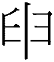」（申）之誤：「淺人不得其例，妄改為神，考諸古說無有合者。《律書》曰：申者言陰用事，申則萬物，故曰申。《律曆志》曰：申堅於申。《天文訓》曰：申者申之也。皆以申釋申，為許所本。」
此以「申」為引申、引而伸之、延伸之義。依《律書》，申也有陰氣用事，延伸規則到萬物的意思。此義與乾卦「建」義相呼應，建為立朝剛；申為申則萬物，為律則的延伸、應用。古代官吏在申時（餔時，大約傍晚的時候）聽事，則是為了延伸白天的政事。
申也可解釋為身，身體的身。或者重，重複的重。段注說：「或曰神當作身。下云陰氣成體。《釋名》、《晉書．樂志》、《玉篇》、《廣韵》皆云：申，身也。許說身字从申省聲，皆其證，此說近是，然恐尙非許意。」「陰气成謂三陰成為否卦也，古屈伸字作詘申，亦叚信，其作伸者俗字，或以羼入許書人部耳。韓子外儲說曰：申之束之，今本申譌紳。申者引長，束者約結。《廣韵》曰：申，伸也，重也。」
、，與寅
坤的字源似乎也和「寅」字有關。《歸藏》坤卦作，聞一多認為這是臾的古字，臾與申相通，加土旁代表地，即為坤（《周易義證類纂》）。于省吾證諸甲骨文與金文認為即寅字（《易經新證》）。
寅楷書或作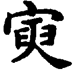，據《說文》，寅古字作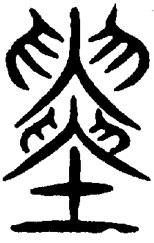。坤小篆為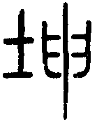，若將土放在申下則為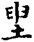，像是從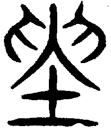演變而來， 也是聞一多說的臾加土，並近似於的簡字。清華簡中的寅字作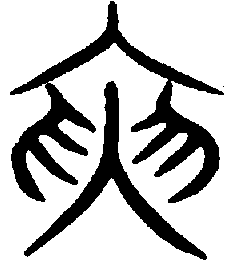 （），這也正是馬國翰《歸藏》中的坤卦卦名，也印證了于省吾說的即寅。然而，清華簡中另有「坤」字，字形與同簡的「寅」有些微差別，寅作，坤作 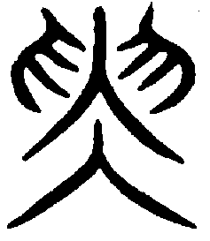（ ）。字和字一樣都很像是簡化的異體。從各種跡象來看，坤與寅似乎有共同的文字發展淵源，當中的關鍵可能在於「申」的古字在演變至篆字成左右對稱之後，字形和寅的上半部很像，而讓寅字被寫成了坤字。
下圖為「申」字的大致演變，最上為甲骨文，其次為金文，最後分別為《說文》所引的古文、籀文，及《說文》的小篆。
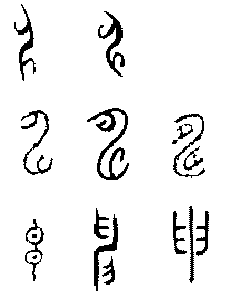
《說文》「寅，髕也。正月陽气動，去黃泉，欲上出，陰尚彊，象宀不達，髕寅於下也。」段注：
髕，字之誤也，當作濥，《史記》、《淮南王》書作螾。《律書》曰：寅言萬物始生螾然也。《天文訓》曰：斗指寅則萬物螾。高注：螾，動生皃。《律曆志》曰：引達於寅。《釋名》曰：寅，演也，演生物也。《廣雅》曰：寅，演也。《晉書‧樂志》曰：正月之辰謂之寅。寅，津也，謂物之津塗。按《漢志》、《廣雅》，演字皆濥之誤。水部曰：濥，水衇行地中濥濥也。演，長流也。俗人不知二字之別，濥多誤為演。以濥釋寅者，正月陽氣欲上出，如水泉欲上行也。螾之為物，詰詘於黃泉，而能上出，故其字从寅。《律書》、《天文訓》以螾釋寅。
依《說文》，寅是正月陽氣動，從地底下欲出而未出，這是由於陰氣還很強，所以陽氣無法上達。段注以為，髕是濥之誤，寅即濥，或螾，後人則將濥與演混為一談。濥是水脈在地底下流動欲出的樣子，用以形容陽氣將離開黃泉而出。演則是水流又長又遠的意思，現今則作演生萬物的演。
寅除了陽氣動而未出、演生、演化的意義，又可做為「津塗」解釋，津塗就是渡水的要道，以比喻萬物開始演生的關鍵出口。
寅與辰（震）雖都是陽氣動，但相較之下辰（震）為陽氣已動而出，萬物已經生長；而寅則是陽氣潛伏未出，陰中伏陽，陽伏地下，萬物蟄伏將生之義。
川與巛
坤卦帛書作川，在漢代許多典籍中作巛，川與巛為古今字。
《說文》：「川，貫穿通流水也。《虞書》曰：濬ㄑ巜，距川。言深ㄑ巜之水會為川也，凡川之屬皆从川。」
依《說文》，川是小流匯成的大流。ㄑ為「水小流」，讀作「捐」，通涓或甽，即小水溝。巜為「水流澮澮」，讀作「快」，從字型來看應是比ㄑ更大的水溝。巛則是將ㄑ和巜挖深而匯流成更大的水流，並用以稱呼較大的河流，即現今講的「川」。
從字源來看，川與寅（濥）描繪的同樣都是水流，差別是寅的水在地下流，並有陽氣蟄伏欲出之義，較偏向津塗、關鍵的涵義；川則是地上的水流，由小流匯聚為大流，更強調的是演生、延伸之義。
卦名之所以作巛，可能與卦象有關，三畫卦的坤卦古代畫作，是以數字卦的三個六（）所組成，形狀洽似巛的橫放。而巛在字義上則可假借為馴、順、巟（荒）。馴順與乾天之剛健相對，即乾健坤順。而巟則與地道之廣大、廣生相應，即乾建律、坤延伸而廣大之。
有學者以「坎為水」來否認「川」之為卦名，這是以後出的觀念來界定更早的易卦。事實上坎為水的觀念大概是在戰國後期之後才出現，例如大約抄寫在戰國中期的清華簡，其八卦方位圖中羅卦（離）說：「北方也，水也，黑色也。」勞卦（坎）：「南方也，火也，赤色也。」這完全與現今坎為水概念是相反的，現今「坎為水」說法的確立是在戰國後期融合五行思想之後才有的。
更何況，無論在古今中外，水象徵的就是生命之源，最足以表達大地廣生的德性。
【卦義】
坤講的是地勢。大地廣博而德厚，無所不承載，象徵包容，博愛、廣生，所以《象傳》說「地勢坤，君子以厚德載物」。
坤地繼承乾天強健之道，以柔順、廣生為德，化育而包容萬物，《繫辭》所謂的：「生生之謂易，成象之謂乾，效法之謂坤。」
《繫辭傳》：「子曰：乾坤其易之門邪！」「闔戶謂之坤（川），闢戶謂之乾（鍵），一闔一闢謂之變，往來不窮謂之通，見乃謂之象，形乃謂之器，制而用之謂之法，利用出入，民咸用之謂之神。」
乾坤也是易道變化之門戶，《繫辭傳》以「關鍵」做比喻，「川鍵」者關鍵也。
相較於乾德之剛健而時變，坤德為柔順而堅貞。乾卦象天以立律，古人因以觀天文而得時間、變化，及規律之觀念，以天上飛的龍為意象，《彖》曰：「大哉乾元，萬物資始，乃統天。雲行雨施，品物流形，大明終始，六位時成，時乘六龍以御天。」因此乾之吉應為「時變」。坤卦象地，效法並承順天道，古人因以察地理而得空間、不變（堅定），及順勢而為的智慧，並以地上跑的馬為比喻。馬是地上最會跑的動物，但又馴服於人，順地勢而行，因此以馬來隱喻大地之廣闊與柔順之德性，《彖》曰：「至哉坤元，萬物資生，乃順承天。坤厚載物，德合无疆，含弘光大，品物咸亨。牝馬地類，行地无疆。」因此坤卦的吉應在於堅貞而順勢。
得此卦較有利於柔順謙卑的人，凡事不利於處於主動，或是過於積極進取；反而適於被動，跟著別人的腳步走。凡爭先恐後、走在前面者反而迷失自己，跟隨人後者可以得到主人指引之利。吉位在西南，往西南方可找到好友或得到錢財，往東北方則否。
得坤卦的成功之道在於堅定而持久、找到能夠幫助你的領導者並追隨於他。但另一方面也要懂得防微杜漸，慎謀於始，否則一開始錯之後就會一路錯到底。
坤，元亨，利牝馬之貞。君子有攸往，先迷，後得主利。西南得朋，東北喪朋，安貞吉。
- 《彖》曰：至哉坤元，萬物資生，乃順承天。坤厚載物，德合无疆，含弘光大，品物咸亨。牝馬地類，行地无疆，柔順利貞。君子攸行，先迷失道，後順得常。西南得朋，乃與類行，東北喪朋，乃終有慶。安貞之吉，應地无疆。
- 《象》曰：地勢坤，君子以厚德載物。
- 《文言》曰：坤至柔而動也剛，至靜而德方，後得主而有常，含萬物而化光。坤道其順乎，承天而時行。積善之家，必有餘慶；積不善之家，必有餘殃。臣弒其君，子弒其父，非一朝一夕之故，其所由來者漸矣，由辯之不早辯也。
- 帛書《易之義》：川六柔相從，順文之至也。 「君子先迷後得主」，學人之胃也。「東北喪崩，西南得崩」，求賢也。 「履霜堅冰至」，豫□□也。「直方大，［不習］」，□□□□［也］。「含章可貞」， 言美請也。「聒囊，无咎」，語无聲也。「黃常元吉」，有而弗發也。「龍單于野」，文而能達也。「或從王事，无成有冬」，學而能發也。
- 《易之義》：子曰：「易又名曰川，雌道也。故曰牝馬之貞，童獸也，川之類也。是故良馬之類，廣前而睘後，遂臧，尚受而順，下安而靜，外又美，則中又臧壽以□□乎。畀以來群，文德也。是故文人之義，不侍人以不善，見亞，墨然弗反，是胃以前戒後，武夫昌慮，文人緣序。
- 帛書《易之義》：易曰「先迷後得主」，學人胃也，何先主之又？天氣作，寒暑不異□，亓寒不凍，亓暑不曷」。
- 帛書《易之義》：易曰：「東北喪崩，西南得崩，吉。」子曰：「非吉石也。亓要，誠與賢之胃也。武夫又柫，文人有輔，柫不橈，輔不絕，何不吉之又？」
【今解】
坤，匯聚了良好之條件，宜於效法母馬的堅定美德。君子要遠行，求快而走在前頭則會迷路，若跟隨於人後則可以因此得到主人指引之利。往西南方會得到錢財或志同道合的朋友，往東北則會遺失錢財或失去朋友，安定則吉。
帛書易傳逸書中三次講到「先迷後得主」，《文言傳》「後得主而有常」顯然也是以「先迷後得主」為句。但從《彖傳》「先迷失道，後順得常」來看，則以「先迷後得」為句。由於後文「西南得朋，東北喪朋」相當確定，「利」字在各傳的解釋中也都未曾見過，因此疑為贅字。若非贅字，則宜放入前句，作「先迷，後得主利」。
【字義】
利牝馬之貞：牝讀為「聘」，「牝馬」為母馬。馬是溫馴且健行的動物，其中牝馬更具此美德，因此以牝馬象徵柔順、謙卑能夠吃苦耐勞，堅貞而專一。利牝馬之貞，得此卦較有利於具備如牝馬這些美德的人。俞琰：「北地馬羣，每十牝隨一牡，而行不入它群，是為牝馬之貞。坤道以陰從陽，其貞如牝馬之從牡則利，故曰利牝馬之貞。」俞琰意思指，北方的馬十匹母馬跟隨一匹公馬（牡），不會與其他的馬群相混雜，對於公馬從一而終。另一種解釋將「貞」解作「問」，卜問的意思。「利牝馬之貞」即「利於卜問關於母馬的事」，意謂古人可能卜問各種生活之事，若有人問的是關於牝馬如何，則得此卦為大吉大利。
君子有攸往：攸有兩種解釋。一是作「所」，「有攸往」即「有所往」，君子要出門前往某地。二是攸為「長遠」的意思，君子有遠往，就是君子要遠行。兩個意思也可相通，因為通常遠行才會說「有所往」，若只是到附近走走，不是遠行，就不說「有所往」。《爾雅．釋言》：「攸，所也。」《說文》：「攸，行水也。」「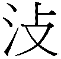，秦刻石繹山石文攸字如此。」段注：「水之安行為攸，故凡可安為攸。又借為逌字，逌，气行皃。水行之攸，气行之逌皆主和緩。故或用攸，或用逌。从攴从人，攴取引導之意，人謂引導者。」「嶧山石文《史記》不載，其文曰：『登于繹山，羣臣從者，咸思長。』今作攸者，傳刻失眞也。又《史記》載會稽石文曰：『皇帝休烈，平一海內，德惠脩長。』小司馬云：『王劭按張徽所錄會稽南山秦始皇碑文，脩作攸。』蓋其字亦作也。用此知《小雅》、《大雅》、《毛傳》皆云『脩，長也』。經文脩字皆攸之假借，本作攸，後改耳。」因此，攸原本為「水行」的意思，依段注，此行為「安行」，讓人可以安行者才稱為攸。攸字也作，古代假借為脩，即脩長的意思，因此有後來引申的「長遠」義。
先迷後得主利：讀為「先迷，後得主利」，依字面有兩種解釋。一是指君子遠行中前後不同的遭遇，一開始先是迷路，後來得到主人指引之利。二是指君子遠行時兩種不同的假設行為所導致的不同後果，如果爭先搶快而走在前面就會迷路而無法到達；如果居後，也就是跟隨於人後，那麼反而可以得到主人指引之利。多數解易者多採取後一種說法，如李鼎祚《周易集解》引盧氏曰：「坤，臣道也、妻道也。後而不先，先則迷失道矣，故曰先迷。陰以陽為主，當後而順之，則利，故曰後得主利。」孔穎達：「若在物之先即迷惑，若在物之後即得主利。」所謂「得主利」，意指得到指引之利。主為「炷」的本字，原本是古代燈中的主火，後引申為賓主、主客的主，主字本義則有明燈、指引之意。主《說文》小篆作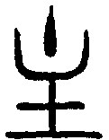：「鐙中火主也。从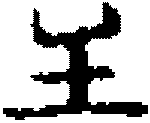，象形。从，亦聲。」段注：「《釋器》：瓦豆謂之登。郭曰：卽膏鐙也。膏鐙《說文》金部之鐙錠二字也，其形如豆，今之鐙盞是也，上為盌，盛膏而䖄火是為主，其形甚微而明照一室。引申假借為臣主、賓主之主。」「象鐙形，、主古今字，主、炷亦古今字，凡主人、主意本當作，今假主為而廢矣。」主的原意，為暗室之明燈，有指引之意味。就引申義來說，「主」也可作「主人」，主人或許指路途中遇到招待過客的人家，招待過客者為「主人」，此亦如旅途中之明燈；或者指自己所能夠追隨的人，也可稱主人。《周易》中除明夷初九「主人有言」之外，其餘如睽卦九二「遇主于巷」《象傳》解釋說「未失道也」，豐卦初九「遇其配主」，九四「遇其夷主」的「主」都有此雙關義，既是指「主人」，亦是有明燈、指引之義。
西南得朋，東北喪朋：朋有兩種解釋，一是朋友的朋，同類、同道、志同道合者之稱。《彖傳》即採此說：「西南得朋，乃與類行。」《說文》中未收朋字，但「鳳」字裡以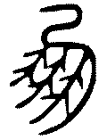為鳳古文並通「朋」字：「古文鳳，象形，鳳飛，羣鳥從以萬數，故以為朋黨字。」此亦可視為「朋」的字源。因坤卦為西南之卦，故往西南方可得其同類。歷代注《易》者也幾乎皆採此說，如王弼：「西南致養之地，與坤同道者也，故曰得朋。」崔憬：「西方坤兌，南方巽離，二方皆陰，與坤同類，故曰西南得朋。」二是以朋為貝串，一串五枚，一朋兩串相連為十枚。王國維：「殷時玉與貝皆貨幣也…其用為貨幣及服御者皆小玉小貝而有物焉以繫之。所繫之貝玉，於玉則謂之玨，於貝則謂之朋，然二者古實為一字。」古代貝串稱朋，玉串則稱玨，都是做為貨幣之用，兩字甲骨文皆作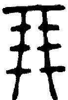，因此可直接翻譯為「錢財」。以朋為錢財的古文例證，如《詩．小雅》「錫我百朋」，鄭箋「古者貨貝，五貝為朋」。現代文字學者多採此說，以朋為朋貝。觀《左傳》、《禮記》、《詩經》等古書，朋多與友字一同出現，與現代用的「朋友」相同，或稱「朋友」、或稱「友朋」。《易經》中友字只出現一次，朋字則出現近十次，未與友字一起出現。其字義兩者兼有，有些地方顯然必需當「朋友」解，但此處兩解都可通。另外，損卦與益卦的「十朋之龜」還可採第三種解釋，以朋為單位，一朋即「兩串」共十枚，十朋一共二十串共一百枚。
安貞吉：安定則吉，安於正則吉。安貞，安定、安於正、安於貞定。
初六，履霜，堅冰至。
- 《象》曰：履霜堅冰，陰始凝也。馴致其道，至堅冰也。
- 《文言》曰：易曰「履霜堅冰至」，蓋言順也。
- 帛書《易之義》：易曰：「履霜堅冰至。」子曰：「孫從之胃也。歲之義，始于東北，成於西南。君子見始弗逆，順而保殼。」
- 《二三子》：卦曰：「履霜，堅冰至。」孔子曰：「此言天時譖，戒葆常也。歲□□□□□□西南溫始於□寒始於□□□□□□□□□□□也(?)守之(?)德，與天道始，必順五行，亓孫貴而宗不傰。
【今解】
腳下踩著秋霜，顯示寒冬已近，將會結成堅硬的冰。
霜為秋天之象，堅冰為嚴冬之象。腳踩秋天的霜就知道寒氣已在凝聚，嚴冬即將來臨。比喻凡事順勢而為，則可長久而堅定，積久而日漸成功。另一解讀為，告戒君子要防微杜漸，見微知著。
「履」有兩種取象。一是初為履。《周易》有以身體高下取六爻之象者，初則言趾言尾，因為趾在下。上則為首，首在上。以初為履象者，如離卦初九「履錯然」，履在足也。這裡也可取八卦卦象，初六變下卦成震，全卦成復。震為足為起，故言「履」。復為冬至，故言「堅冰至」。
《文言傳》說「坤至柔而動也剛，至靜而德方，後得主而有常，含萬物而化光」，《象傳》說「馴致其道，至堅冰也」，為何坤卦既是「柔順」又是「堅定」？「至柔而動也剛」？此比喻可說明坤卦柔順的力量如何從輕微的秋霜終至冬天堅硬的冰，在於長久的逐漸累積。
相較於乾卦的陽剛力量，其本身就很顯著，問題只在於是否有表現的時機，因此爻辭直言出處，出即離隱入世，處即潛伏不動，極則退位免悔。坤卦的柔順力量則是必需經過累積才會顯著，因此爻辭以積漸言之。王弼則解釋說：「陰之為道，本於卑弱而後積著者也，故取履霜以明其始。陽之為物，非基於始以至於著者也，故以出處明之，則以初為潛。」
然而宋代之後易學家對於「履霜，堅冰至」的銓釋多數認為是告戒君子要防微杜漸，在小人之勢初長時就要防備，不可任其滋長。例如《易程傳》：「陰始生於下，至微也。聖人於陰之始生，以其將長，則為之戒。陰之始凝而為霜，履霜則當知陰漸盛而至堅冰矣。猶小人始雖甚微，不可使長，長則至於盛也。」俞琰：「坤初而言履霜堅冰至，以象小人惡迹，始雖甚微，如霜之在地，盛而與君子為敵，則如冰之堅固也。」來知德：「方履霜而知堅冰至者，見占者防微杜漸，圖之不可不早也。易為君子謀，乾言勿用，即復卦閉關之義，欲君子之難進也。坤言堅冰，即姤卦女壯之戒，防小人之易長也。」這是依據《文言傳》：「坤道其順乎，承天而時行。積善之家，必有餘慶；積不善之家，必有餘殃。臣弒其君，子弒其父，非一朝一夕之故，其所由來者漸矣，由辯之不早辯也。」虞翻注曰：「乾為積善。」「坤積不善，以臣弑君，以乾通坤，極姤生巽，為餘殃也。」
明儒是以鄙視而偏見的觀點在看坤陰之道，只見坤卦馴順的敝端而未見其正面之創生義。的確，為防坤順的敝端則必需在一開始就分辨出是非善惡，否則走錯方向就一錯到底。但此觀點未能看到陰性柔順的漸積致遠美德，實則坤卦與乾卦同為易道之門戶，共為生生之源，乾坤兩卦一牡一牝，一動一靜，剛柔並濟，一建立律則一承順推演，兩者相輔相成。
【字義】
陰始凝：凝通冰，水變堅硬，結冰。《說文》：「冰，水堅也，从仌从水。凝，俗冰从疑。」段玉裁：「易《象傳》：『初六履霜，陰始凝也；馴致其道，至堅冰也。』古本當作『陰始冰也』、『至堅仌也』。
六二，直方大，不習无不利。
- 《象》曰：六二之動，直以方也。不習无不利，地道光也。
- 《文言》曰：直其正也，方其義也。君子敬以直內，義以方外，敬義立而德不孤。直方大，不習无不利，則不疑其所行也。
- 帛書《易之義》：易曰：「直方大，不習，吉。」子曰：「生文武也，雖強學，是弗能及之矣。」
- 《二三子》：卦曰：「直方大，不習，无不利。」孔子曰：「□□弌也直者□□自避也。方者……， 大者，言亓直或(?)之容焉。□□□□□□□□□□□□□□□□□□□□□□□也。□置无不利□，故曰「无不利」。
【今解】
正直、方正，而大度能容，天生有此德，不待學習，無所不利。
性情柔順，而能守中庸之道，具有正直、方正，而大度的美德。
六二爻因居於下卦之中，符合中庸柔順之德，此為內直；六二乃坤卦主爻，天圓地方，坤為方，具坤之方德。坤道厚德載物，德合無疆，含弘光大，因此曰大。《繫辭》「二多譽」，二爻是多譽多吉之地，現在又以陰爻居之，當位，所以大吉。
【字義】
直方大：坤六二具有直、方、大三種美德。直為正直，屬內在的美德。方為方正而有義，有品格，為外在的自我要求並推己及人，以致於道德之廣大。方亦有旁生、廣博、朋比之義。大指大地廣大無邊，無所不承載，包容萬物，含弘而光大。《文言傳》：「直其正也，方其義也。君子敬以直內，義以方外。」朱熹則注曰：「其德內直外方而又盛大」。《說文》：「直，正見也。」「方，併船也。」段注：「故知倂船為本義，編木為引伸之義。又引伸之為比方，子貢方人是也。《秦風》『西夫之防』毛曰：防，比也。謂防卽方之假借也。又引伸之為方圓、為方正、為方向。又假借為旁，丄部曰：旁溥也。凡今文《尙書》作旁者古文尙書作方，為大也。《生民》『實方實苞』毛曰：方極畝也。極畝，大之意也。又假借為甫，《召南》『維鳩方之』毛曰：方之，方有之也，方有之猶甫有之也。」方字原義為兩隻船併在一起，後引申為比方的方（近似於朋比的意思），方正的方，還有方向的方，防止的防，也假借為旁溥的旁，引申為廣大的大。自古有「天圓地方」之說，因此坤地以「方」形容之。另有一說以「大」為陽，方為四方、廣布、廣博之義。如荀爽曰：「大者，陽也。二應五，五下動之，則應陽出，直布陽於四方。」《九家易》注解《象傳》「六二之動，直以方也」：「謂陽下動應之，則直而行，布陽氣，動於四方也。」初六爻以「履霜堅冰至」講坤柔如何積漸而至「其動也剛」，六二則講如何「敬以直內」而至坤道之廣大。
戰國竹簡中「直」借為「犆」，通「特」，《說文》：「牛父。」通「牡」，即繁殖用的父獸，種牛、種馬、種羊。因坤卦以馬為喻，因此直（犆）即種馬，繁殖用的公馬。直方大，原始意思可能意指繁殖的種馬正長大。
不習无不利：不需學習，而無所不利。習為學習、重習、練習之意。不習而能夠無所不利，表示直方大的美德是天生之自然，無需學習就有的，因此而能夠無往不利。
于省吾認為，「直方大，不習无不利」應作「值方大，不襲，无不利」，正值方國壯大之時，方國未來襲擊，因此而無不利。此說雖文字考證上持之有故，言之成理，但不符易理。朱興國認為，值方大為小鳥正值長大之時，習為鳥習飛。
六三，含章可貞，或從王事，无成有終。
- 《象》曰：含章可貞，以時發也；或從王事，知光大也。
- 《文言》曰：陰雖有美，含之以從王事，弗敢成也。地道也，妻道也，臣道也。地道无成，而代有終也，天地變化，草木蕃，天地閉，賢人隱。
- 帛書《易之義》：易曰：「含章可貞，吉。」「言美請之胃也。文人僮，小事時說，大事順成，知毋過數而務柔和。」易曰：「或從王事，无成又冬。」子曰：「言詩書之胃也。君子笱得亓冬，可必可盡也。君子言于无罪之外，不言於又罪之內，是胃重福。」 ○「或從王事，无成有冬」，學而能發也。
- 《二三子》：卦曰：「含章可貞，［或從王事，无成有終］。」孔子曰：「□□□□□□□□□□□□□含亦美，貞之可也，亦□□□□□□□□□。［或］从［王］事矣。下□□□。
【今解】
內含文章之美而可以以此安定自守，或者也可以選擇跟隨於王者做事，雖不能有所成就但也可以有好的結局。
六三變，下卦成艮，整卦成謙，謙者虛己而卑。又下體坤成艮，艮為藏，坤為文，為文章止於內而不發，藏文含章之象。「章」指具備成事之美德，「含」指藏於內而不發。坤以順為德，不為物先。互卦成震而連至外卦，因此說「或從王事」，「或」指選擇，可動可靜，靜為居內而「含章」，動則向外而「從王事」。
【字義】
含章可貞：章為文章的意思，文成曰章，章有「完成」（終）之意喻，含章比喻君子修養而具備內在美德。《說文》：「樂竟為一章，从音从十。十，數之終也。」段注：「歌所止曰章。」因此「章」即有「終」義。「貞」意指可以堅定自守，獨善其身。「含章可貞」指賦有天生的美德而能夠自守其道。卦辭說「安貞吉」，安定貞定則吉。《象》曰「含章可貞，以時發也」，君子本身具有文章美德，自可選擇出世或入世，至於或動或藏，一切只是時機問題。需等待時機來了，才會出發動。
或從王事：「或」代表可能的選擇，君子只要涵養文德，那麼要獨善其身（含章可貞），還是出來做事（從王事），兩種選擇都是可以的。反之，若沒有文章美德，那麼恐怕就沒得選擇。
无成有終：沒有成就，但有結果。因為坤屬臣道，成就屬於王者。卦辭說「先迷，後得主利」，坤卦以追隨他人為事，講的是臣道，不可居先，只能追隨明君。成敗自是不屬於自己（無成），但求努力而能夠完成王事（有終）。有終或可解釋為有個去處，棲身之處。《象傳》說「或從王事，知光大也」，意謂這是君子知識、智慧之光大。朱熹以「無成有終」為「或從王事」之後的前後兩個階段，先是無所成就，後而能有終：「六陰三陽，內含章美，可貞以守。然居下之上，不終含藏，故或時出而從上之事，則始雖无成，而後必有終。」李光地亦採此說。
六四，括囊，无咎无譽。
- 《象》曰：括囊无咎，慎不害也。
- 《文言》曰：易曰「括囊，无咎无譽」，蓋言謹也。
- 帛書《二三子》：易曰：「聒囊，無咎無譽。」孔子曰：「此言箴小人之口也。小人多言多過，多事多患，□□可以衍矣，而不可以言箴之，亓猷聒囊也。莫出莫入，故曰無咎無譽」。二厽子問曰：「獨無箴於聖人之言乎？」孔子曰：「人之言也，德之首也。人之有口也，猶地之有川浴也，財用所繇出也；猷山林陵澤也，衣食庶物所繇生也。人壹言，萬世用之。唯恐亓不言也，有何箴焉？
- 帛書《易之義》：「聒囊，无咎」，語无聲也。 ○易曰：「聒囊，无咎。」子曰：「不言之胃也。不言，何咎之又？墨亦毋譽，君子美亓慎而不自箸也。淵深而內亓華。」
- 《荀子‧非相篇》：凡人莫不好言其所善，而君子為甚。故贈人以言，重於金石珠玉；觀人以言，美於黼黻文章；聽人以言，樂於鍾鼓琴瑟。故君子之於言，無厭；鄙夫反是：好其實不恤其文，是以終身不免埤汙傭俗。故易曰「括囊，無咎無譽」，腐儒之謂也。
【今解】
將袋口綁緊，比喻人應當謹言慎行，以求得沒有罪咎。六四為近於君位的多憂之地，因此只能戰戰競競，謹慎小心，以求得不犯錯，不要希求會得到任何的讚賞。
另依帛書易傳所引孔子說法，此專指箴（緘）小人之口：「孔子曰：此言箴小人之口也。小人多言多過，多事多患。」
【字義】
括囊：將囊口綁緊，比喻人言行應當謹慎，守口如瓶。括為打結，將東西綁住。囊為裝東西的袋子。朱熹注曰：「括囊，言結囊口而不出也。」括囊就是將袋口綁緊而慎防物品掉出。象曰「括囊无咎，慎不害也」，謹慎行事，就能免於受害。王弼：「括結否閉，賢人乃隱。施慎則可，非泰之道。」
无咎無譽：沒有罪咎，但也不會得到聲譽、讚賞。
六五，黃裳，元吉。
- 《象》曰：黃裳元吉，文在中也。
- 《文言》曰：君子黃中通理，正位居體，美在其中，而暢於四支，發於事業，美之至也。
- 帛書《易之義》：「黃常元吉」，有而弗發也。 ○易曰：「黃常元吉。」子曰：「尉文而不發之胃也。文人內亓光，外亓龍，不以亓白陽人之黑，故亓文茲章。」
- 《二三子》：卦曰：「黃裳元吉。」孔子曰： □□□□□□□□□□□□□□□□□□。元者也。元， 善之始也。□□□□□□□□□色之徒。嗛嗛君子□□□□□□。
【今解】
黃色下裙，大吉。黃為中色，裳為下飾。黃裳比喻性情柔順而中庸。六五柔中，又處尊位，有美德而自然能表現於外。
帛書易傳《易之義》引孔子說，文人壓抑其文彩、內含其光而不發，不以其白揚人之黑，而使得其文彩更為彰顯。此似於六三「含章之美」。
南蒯叛變得坤之比，子服惠伯以「黃、裳、元」為中、下、上三種德行，符合此三德方得為吉。元者善之長也。南蒯判變，不符忠信之道，因此失敗收場。
【字義】
黃裳：黃為中色，在《易經》中有中庸的意味，也是吉祥之色。裳為下半身的服飾，隱喻謙卑。黃裳比喻中庸而又謙卑。《文言傳》「天玄地黃」，坤為地，五為坤之尊位，故以「黃」為喻。六為陰，代表柔順，處五之尊位，能中庸而又柔順。帛書「裳」作「常」，兩字通。《說文》：「常，下帬也，从巾尚聲。」「常或从衣。」段注：「《釋名》曰：上曰衣，下曰裳。裳，障也，以自障蔽也。…今字裳行而常廢矣。」「常」為下半身所穿的裙子，以遮蔽下體，亦可做「裳」。裳字行而常字廢。《儀禮．士冠禮》鄭玄注：「上士玄裳，中士黃裳，下士雜裳。雜裳者，前玄後黃。《易》曰：夫玄黃者，天地之雜色，天玄而地黃。」黃裳為中士所穿的下身衣飾。
元吉：大吉，原本就吉。《文言傳》「元者善之長也」，「元」是對於美善之大者的稱呼，吉屬美善，因此亦可以元稱其大。
【筮例】
《左傳》昭公十二年南蒯叛變：南蒯叛變前筮問一卦，得坤之比，坤卦六五變，原本以為「黃裳元吉」為大吉，但子服惠伯解釋說，只有忠信之事才會大吉，否則必敗。如果筮問的人不符合爻辭中所稱美的忠信德性，那麼反而是大凶。而且《周易》不可以占問險惡之事。後來南蒯果然事敗。
惠伯曰：「吾嘗學此矣，忠信之事則可，不然，必敗。外彊內溫，忠也；和以率貞，信也。故曰『黃裳元吉』。黃，中之色也；裳，下之飾也；元，善之長也。中不忠，不得其色；下不共，不得其飾；事不善，不得其極。外內倡和為忠，率事以信為共，供養三德為善，非此三者弗當。且夫《易》，不可以占險，將何事也？且可飾乎？中美能黃，上美為元，下美則裳，參成可筮，猶有闕也，雖吉，未也。」
上六，龍戰于野，其血玄黃。
- 《象》曰：龍戰于野，其道窮也。
- 《文言》曰：陰疑於陽必戰，為其嫌於无陽也，故稱龍焉；猶未離其類也，故稱血焉。夫玄黃者，天地之雜也，天玄而地黃。
- 帛書《二三子》：「龍單于野」，文而能達也。
- 帛書《易之義》：「蠪單于野，亓血玄黃。」子曰：「聖人信哉！隱文且靜，必見之胃也。」
龍在野外打鬥相爭不下，兩敗俱傷，流出的血與泥土相混雜而成玄黃色。
玄黃是天地混雜的顏色，因上位是天位。坤為地，因此上六為天地相混之爻。坤陰至極則傷陽而戰。
此比喻人未能一開始就辨明正邪，剛愎自用，最終陰氣與疑心致極而引發爭端。另一比喻為小人居君子位，為惡多端，最終事態敗露而引來災難，窮途而沒路，故《象傳》說「其道窮也」。此象有血光之災。
乾卦以龍為喻，龍喻陽。坤上六取龍象讓易學家相當苦惱，其龍象自何而來？
《文言傳》：「陰疑於陽必戰，為其嫌於无陽也，故稱龍焉。猶未離其類也，故稱血焉。夫玄黄者，天地之雜也，天玄而地黄。」依王弼注，這是因為辨之不早辨，到最後「疑盛乃動，故必戰」。這是繼「初六履霜堅冰至」而言，坤以承順並堅貞於陽為德，初六初始階段就應辨別何為真陽真主，但一直到最後（上六）才發現到沒有真陽真主，於是疑心到極致。又上六為首為至極天位，帶頭者（首）原本應為陽，但此首為陰，這是「假陽」、「假龍」，最後積惡日久而驗證「這不是陽」，因此戰端起（嫌於無陽也）。這也是《文言傳》所說的：「積不善之家，必有餘殃。臣弒其君，子弒其父，非一朝一夕之故，其所由來者漸矣，由辯之不早辯也。」「龍戰於野」即積不善最終至「臣弒其君，子弒其父」。「猶未離其類也，故稱血焉」則是意指上六「假陽」，但終究未離其所屬的陰類，因此終將見血。「夫玄黄者，天地之雜也，天玄而地黄」則是說明此龍為「假龍」，既不屬「天」龍，也不屬「地」馬，而是屬於「雜」種。
另一說，上六位於最外，為野，上六陰變陽成九為龍，坤卦之極而變為乾陽，故龍戰於野。
漢易學家則以陰陽消息解釋龍戰於野。消息卦中坤在亥位，在後天八卦中為乾卦的方位。荀爽曰：「消息之位，坤在於亥。下在伏乾，為其兼於陽，故稱龍也。」「消息之卦，坤位在亥，下有伏乾，陰陽相和，故言天地之雜也。」侯果：「坤，十月卦也。乾位西北，又當十月。陰窮於亥，窮陰薄陽，所以戰也。故《說卦》云戰乎乾是也。六稱龍者，陰盛似龍，故稱龍也。」這樣的解釋也呼應了《說卦傳》：「戰乎乾，乾，西北之卦也，言陰陽相薄也。」後天八卦方位，乾位在西北，在戌亥之間的位置，大約是坤卦卦氣發展的位置，也就是亥位，此為陰陽相薄（薄）的方位，故稱「戰」。
↓ 左為十二消息卦圖，坤在亥位；右為後天八卦圖，乾在戌亥位之間。兩者都大約在西北的方位，漢易學家以為這是陰陽相薄（迫）的位置。
{kind=link}
【字義】
龍戰于野，其血玄黃：龍在野外打鬥而流血，流出的血與泥土混雜而成玄黃之色。玄黃形容龍流血的樣子，有人說是講龍血的顏色（暗黃色），也是天地顏色混雜的樣子。高亨說是「泫潢」，也就是血流如注的樣子。《文言傳》：「夫玄黄者，天地之雜也。天玄而地黄。」以玄黃為天地的雜色，但也有引喻龍戰之意謂，因龍象天，在野地上戰鬥，其血與地相混雜。「戰」帛書作「單」，古文中「單」作「盡」解，如《書．洛誥》「考朕昭子刑，乃單文祖德」，《詩．小雅》「俾爾單厚」，《禮記．郊特牲》「唯為社事，單出里」《禮記．大傳》「戚單于下」，《禮記．祭義》「歲既單矣」。「龍單於野」即「龍盡於野」。又帛書易傳《二三子》、《易之義》分別以「文而能達」、「隱文且靜，必見之謂也」解釋之，文義不像是「龍戰於野」的「凶」象，比較像是在講難得一見的龍終於出現的瑞象。《左傳》昭公十九年記載鄭國大水之後見到龍在打鬥：「鄭大水，龍鬥于時門之外洧淵，國人請為禜焉，子產弗許，曰：我鬥，龍不我覿也；龍鬥，我獨何覿焉。禳之則彼其室也，吾無求於龍，龍亦無求於我，乃止也。」「龍鬥」即「龍戰」，鄭人第一反應是要舉行「禜」祭，可見在古時見到龍時有祭祀祈福之俗。《說文》：「血，祭所薦牲血也。」那麼「其血玄黃」或許講的是見到龍戰之後舉行祭祀，其所用的牲血灌澆於地的樣子。《說文》亥字段注認為，龍戰於野即龍接於野：「許云荄也者，荄，根也，陽氣根於下也。十月於卦為坤，微陽從地中起接盛陰，卽壬下所云陰極陽生，故易曰：龍戰於野。戰者接也。」
用六，利永貞。
- 《象》曰：用六永貞，以大終也。
【今解】
宜於永遠貞定。
問筮得坤卦六爻皆六，也就是「坤之乾」，則以「用六」為占驗。用六也是六個陰爻全部都變陽爻，符合陰隨陽，及坤卦堅持到底的德性。因此利永貞。用九為群龍無首之象，用六則是從一而終，專一堅定到底，蓋因坤陰之美德在於「貞」，因此用六曰「永貞」，為能永遠謹守貞正之美德者。
孔穎達：「永，長也。貞，正也。言長能貞正也，言長能真正也。」朱熹：「用六，言凡筮得陰爻者，皆用六而不用八。亦通例也。以此卦純陰而居首，故發之。遇此卦而六爻俱變者，其占如此辭。蓋陰柔而不能固守，變而為陽，則能永貞矣。故戒占者以利永貞，即乾之利貞也。自坤而變，故不足於元亨云。 」
【彖傳注】
至哉坤元，萬物資生，乃順承天。坤厚載物，德合无疆，含弘光大，品物咸亨。牝馬地類，行地无疆，柔順利貞。君子攸行，先迷失道，後順得常。西南得朋，乃與類行。東北喪朋，乃終有慶。安貞之吉，應地无疆。
至哉坤元，萬物資生，乃順承天：解釋「元」，讚嘆坤道廣生之德。至，極至，無所不至。天施地生，乾道博施，坤道承順天道，廣生萬物，因此說「萬物資生，乃順承天」。
坤厚載物，德合无疆。含弘光大，品物咸亨：解釋「亨」。
品，類也。品物，萬物。咸亨，皆亨。坤道之廣生，在於能夠承順天道，「含弘光大」因「乃順承天」，乾為光為大。弘為大。此即乾卦《彖傳》講的「雲行雨施，品物流形」。荀爽：「乾二居坤五為含，坤五居乾二為弘，坤初居乾四為光，乾四居坤初為大也。」依荀爽注解，含弘光大指的是乾坤旁通而成屯與家人。
牝馬地類，行地无疆，柔順利貞：解釋「利牝馬之貞」。坤為陰為地，因此以地上跑的母馬作隱喻。乾為天，以飛龍為喻。侯果：「地之所以含弘物者，以其順而承天也。馬之所以行地遠者，以其柔而伏人也。而又牝馬，順之至也。誡臣子當至順，故作易者取象焉。」
君子攸行，先迷失道，後順得常：解釋「君子有攸往，先迷後得」。這段經文似乎與乾坤的旁通有關。乾卦《彖》講「雲行雨施，品物流行」，坤《彖》則講旁通的兩段歷程。乾四至坤初成小畜與復卦，坤初至乾體成小畜這是「先迷」，因為迷路，所以小畜卦講的都是「復」（回家，迷途知返）之事。小畜九二再到復五，復六五到小畜二，成家人與屯卦為後得。因此《彖傳》家人卦：「女正位乎內，男正位乎外，男女正，天地之大義也。家人有嚴君焉，父母之謂也。父父，子子，兄兄，弟弟，夫夫，婦婦，而家道正。正家，而天下定矣。」屯卦：「雷雨之動滿盈，天造草昧，宜建侯而不寧。」屯卦為坤體受乾，為雲行雨施而天造草昧。家人卦為乾體受坤，為坤陰先迷後得而家道正之卦。
西南得朋，乃與類行。東北喪朋，乃終有慶：坤為西南之卦，又為朋象，因此往西南則得其朋，往相反的東北方為喪朋。另外也可以旁通來解釋。「西南得朋，乃與類行」是乾四將之坤初成復與小畜，乾四至坤初即西南得朋，因此復卦說「朋來无咎」。「東北喪朋，乃終有慶」則是指乾上將之坤三成謙與夬，夬即訣別之義，而謙即東北喪朋之象，蓋因下艮為東北，上坤為朋，艮在內為拒止之義。謙卦又曰「君子有終」，此「乃終有慶」。
安貞之吉，應地无疆：解釋「安貞吉」。「應地无疆」即前文所說「坤厚載物，德合无疆」。
管见一则
關於“鳳”與”朋”相通之事，據孫詒讓、高田忠周等考證，因兩字古文形體較為相似導致許誤以為兩者有聯繫，後孫次舟在《說文所稱古文釋例》中對此有較為詳細的說明。故愚以為關於“鳳朋“的此段文字實可以刪除。
還是得保留
《說文》的錯誤很多，不只此字。兄所說的資料即使較有道理，或已成定論，也無法抹滅《說文》曾經這麼解釋的事實。況且古文字說法、解釋也經常是眾說紛紜，莫衷一是。《說文》如此解釋自有其影響，就其影響本身，就是必需提的原因。就如「易」字，《說文》三說在當代古文字研究中早就被否決了，這應該也是很明確的事，但在解釋「易」字時《說文》的看法還是得提。因為後世很多看法都源自《說文》。何止這些小學問題，周易中許多理論學說，個人證明那是錯的，但能不提嗎？不能的。那都是易學史發展的一個軌跡。更何況我證明它是錯的，全世界並不見得會認為那就是錯的。
"往東南方則否" ...?
"吉位在西南，往西南方可找到好友或得到錢財，往東南方則否。" <= 是 "東北" 嗎?